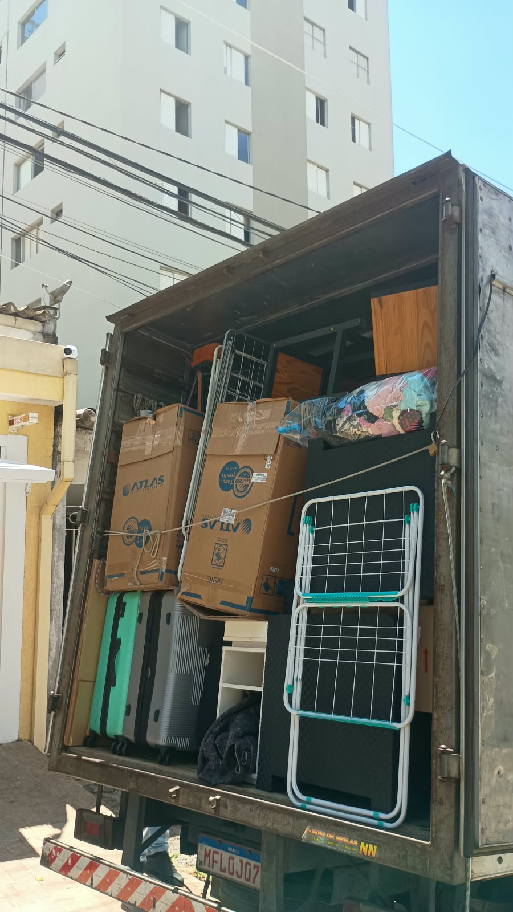
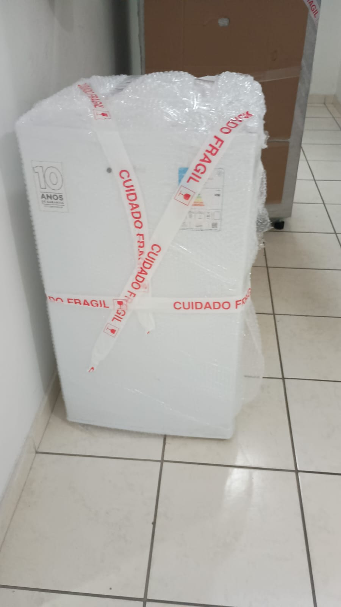
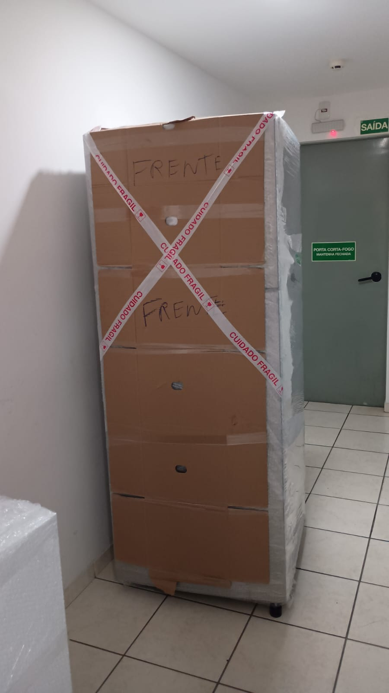
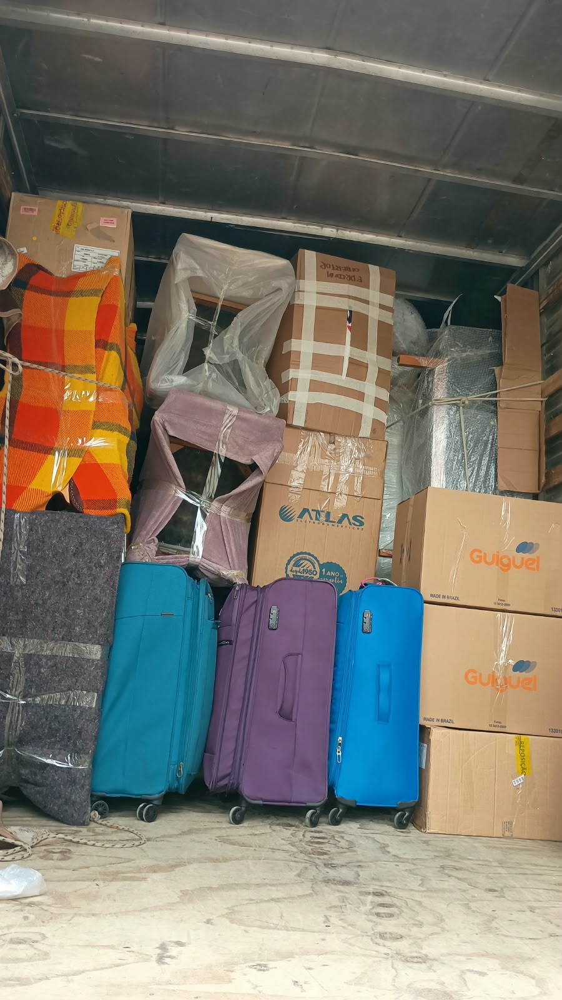
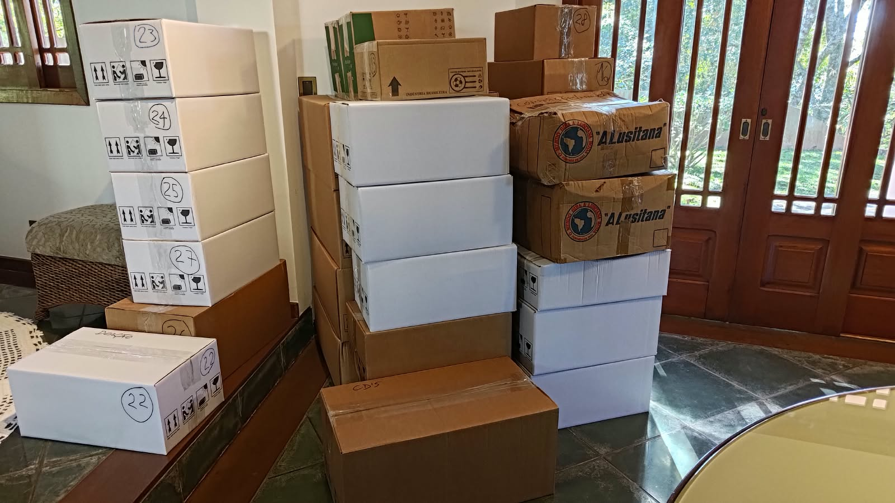
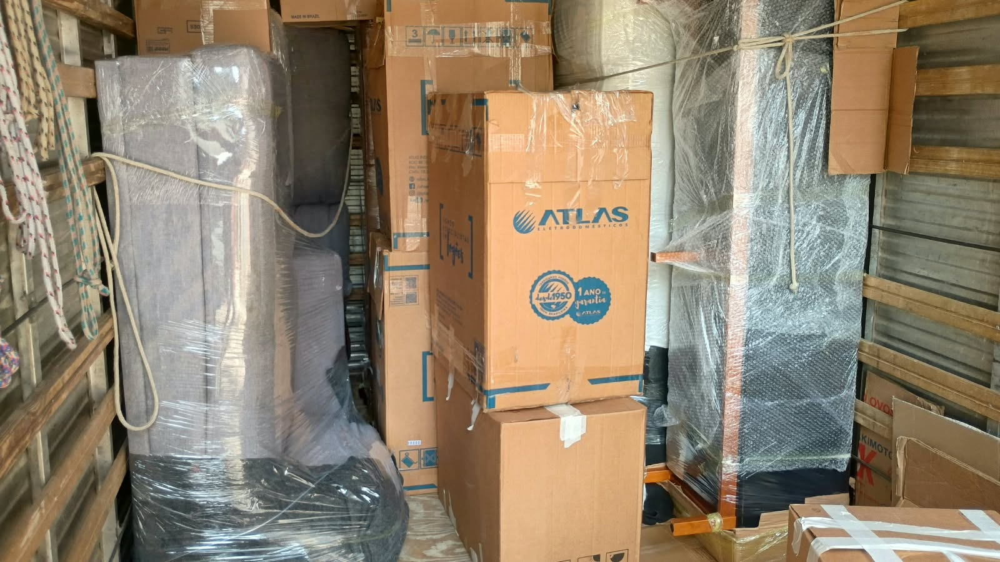
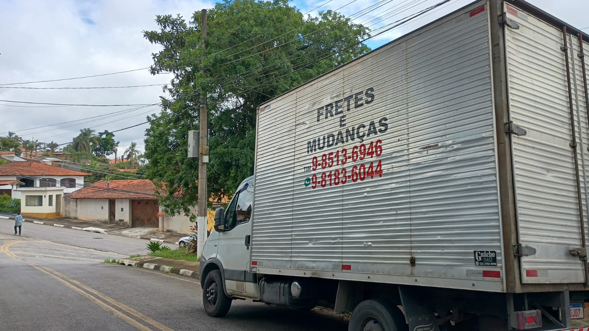

Mudanças residenciais
Para apartamentos, casas e condomínios, com atenção especial a cada item da sua rotina.
Do primeiro contato à entrega, a Rogério Mudanças trabalha com organização, respeito pelos seus pertences e comunicação clara.
Monte seu pedido em poucos passos. Ao finalizar, uma mensagem completa é preparada para enviar diretamente ao WhatsApp.
Soluções para mudanças residenciais e comerciais, pensadas para deixar o dia mais simples para você.
Para apartamentos, casas e condomínios, com atenção especial a cada item da sua rotina.
Organização para transportar móveis, equipamentos e materiais do seu negócio com cuidado.
Uma opção prática para transportar móveis, compras e volumes que não podem esperar.
Você sabe o que esperar antes, durante e depois da mudança.
Conte o que precisa e tire suas dúvidas diretamente pelo WhatsApp.
Definimos os detalhes do serviço para combinar uma solução adequada.
Chegamos preparados para conduzir o transporte com organização e atenção.







Registros do cuidado e da organização em cada mudança.
Envie uma mensagem. Rogério vai entender o que você precisa e orientar os próximos passos.